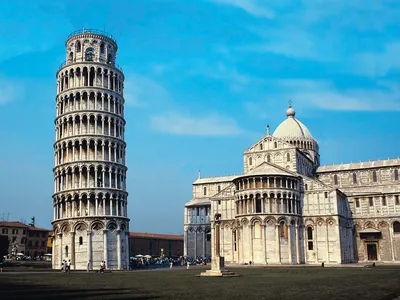

History of the Leaning Tower of Pisa
The Leaning Tower of Pisa is one of the most famous architectural landmarks in the world. Its construction began in 1173 and continued over 199 years in three stages.
Construction Timeline
1173: Construction Begins
The foundation of the Leaning Tower of Pisa is laid, and construction begins under the guidance of architect Bonanno Pisano.
1185: First Signs of Tilt
The tilt begins to appear as a result of unstable soil beneath the tower’s foundation.
1272: Construction Resumes
Construction resumes after several years of delay due to the tilt, with adjustments made to compensate for the lean.
1372: Completion of the Tower
The Leaning Tower of Pisa is completed after nearly 200 years of construction, still tilted but functional as a bell tower.
1990: Tower Closed for Safety Reasons
The Leaning Tower of Pisa is closed to the public due to fears that the tilt could cause it to collapse.
2001: Stabilization Efforts Begin
Engineers begin work on stabilizing the tower and reducing the tilt to ensure its safety.
2008: Tower Reopens
After extensive restoration and stabilization, the Leaning Tower of Pisa reopens to the public.
Visiting Information
| Category | Details |
|---|---|
| Opening Hours |
|
| Ticket Prices |
|
| Location | Piazza dei Miracoli, Pisa, Italy |